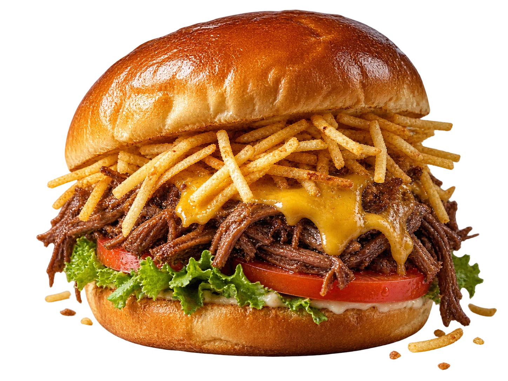
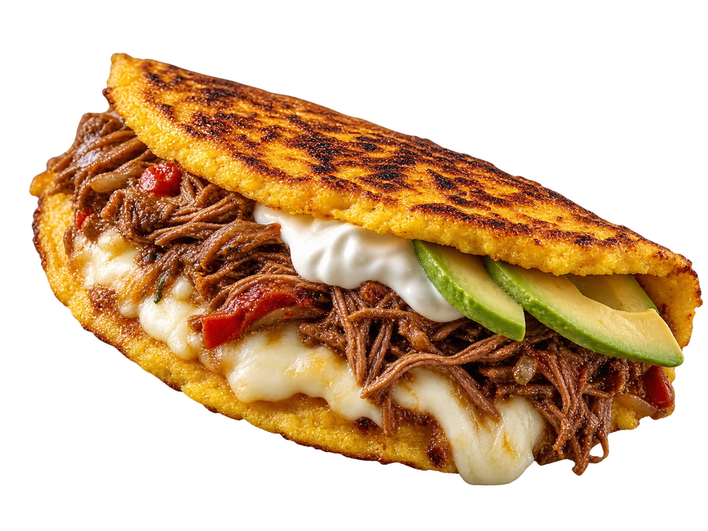

Cachapas
Cachapa criolla
19,00 €
Cachapas que van con todo. Pepitos con carácter. Antojos que no se negocian. Esto es El Budare’s.


Una primera vuelta por nuestra carta. El resto te espera un poco más abajo.
Maíz, queso de mano, carne mechada. Una carta que habla claro: sabores venezolanos, bocados generosos y muchas formas de decir «hoy me lo merezco».
Del desayuno criollo a ese pepito que te llevas en la cabeza todo el día. Elige el tuyo. Nosotros ponemos la carta.
Vamos a lo importanteEl pedido y el pago se completan en la plataforma que elijas. Allí verás precios finales, gastos y disponibilidad.
Abre las reseñas originales compartidas de Google Maps. Opiniones en su fuente, sin cambiar una palabra.
Los seis enlaces se han facilitado como referencias de reseñas. No se transcriben comentarios, autores ni estrellas sin poder verificarlos.
Bar café El Budare’s
Bilbao
Consulta en Google Maps la ubicación, el horario actualizado y cómo llegar. La dirección exacta se muestra en la ficha del local.
Cómo llegarPulsa «Pide ahora» y elige Glovo o Uber Eats. Completa allí tu pedido y el pago. La selección de esta web no se transfiere automáticamente a esas plataformas.
Sí. Añade platos a «Mi antojo», elige variantes, ajusta cantidades y apunta tus preferencias. Puedes copiar o descargar el resumen. No se envía al restaurante ni reserva productos.
La carta parte de las capturas facilitadas. Los precios, gastos, promociones y disponibilidad de Glovo y Uber Eats pueden ser distintos. Dos precios de esta propuesta se marcan con un asterisco porque no eran legibles.
Las descripciones no son una declaración completa de ingredientes o alérgenos. Consulta al restaurante o a la plataforma antes de pedir si tienes alergias o intolerancias. No incluyas datos de salud en las notas de esta demo.
Abre la ficha de Google Maps desde «Cómo llegar» para consultar la ubicación exacta y el horario actualizado del local. No se han añadido horarios sin verificar.